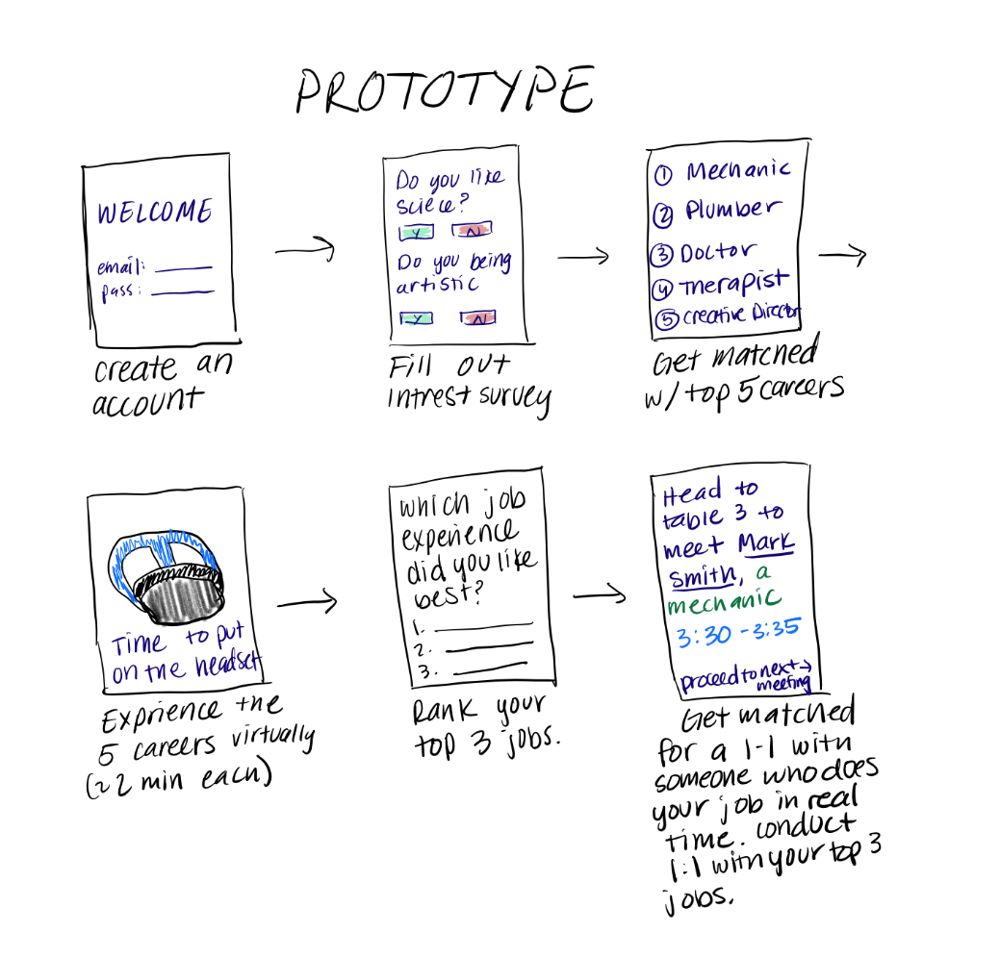
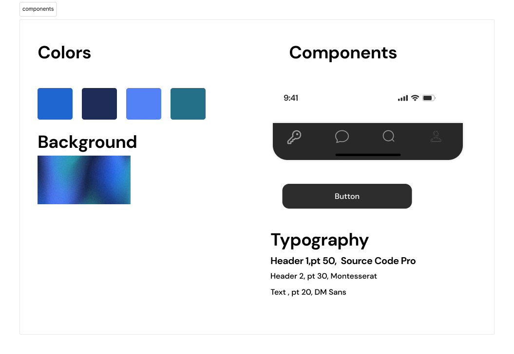

Visual Pathways

Project Type
Mobile Application
Timeline
January 2024 - March 2024
Role
UX Designer, Researcher
Team
6 Designers
Background
This project was made for a upper division design class here at UC San Diego called Social Computing. In this class we explore the intersection between social behavior and computational systems. The final project for this class was to design a social computing experience that is functional and can be "played" by multiple people within a specific setting.
The Challenge
In today's job market, a staggering 70% of American workers find themselves unsatisfied with their career choices, a condition that emphasises an issue of career misalignment and dissatisfaction.
Solution
Visual Pathways directly tackles the challenge of career dissatisfaction through an immersive VR platform that builds upon conventional career guidance methods. By simulating real-life work experiences across various industries, it allows students to explore and understand different career paths through virtual reality.
Problem Statement
"How can we design an immersive app that addresses widespread career dissatisfaction by offering interactive, VR-based simulations of various professions, guided by industry professionals, to provide users with a comprehensive and engaging way to explore potential career paths, better aligning their skills and interests with real-world job expectations?"
Research Highlights
Competitive Analysis
Analyzed 3+ competing products in the career guidance space
User Interviews
Conducted interviews with students and industry professionals
Research Process
Competitive Analysis
| Competitors | Strengths |
|---|---|
| Transfr |
|
| CareerLabsVR |
|
Interview Insights
"I think having the options to do both [shadowing in person and VR] would be awesome, but I think it's crucial to be able to do it [shadowing] in person."
- Taj, High School StudentPrototyping Process
Design Goals
Based on our research, we identified that career fairs are often disorganized and lack personalized guidance. Users showed strong interest in VR-based career exploration and job shadowing experiences.


First Iteration
- Personality quiz implementation
- VR demo videos from top 3 matches
- Slack integration for recruiter communication
- In-person recruiter meetings and aptitude tests
In-person Feedback
- Aptitude tests translation issues
- Overcrowding at popular career stations
- Low Slack engagement
Survey Feedback
- Career relevance concerns
- Positive quiz experience
- Engaging VR demonstrations
IA Feedback
- Limited VR interaction
- Unclear recruiter benefits
- Disconnected networking experience
Second Iteration Improvements
Career Relevance
Expanded career options beyond available VR demos, focusing on interactive experiences rather than pre-recorded content.
Interactive VR Experience
Implemented joint VR sessions where students and recruiters could interact during demonstrations.
Recruiter Benefits
Enhanced recruiter engagement through direct interaction and talent identification capabilities.
Final Design

Style Guide
Our final design embraces a futuristic aesthetic to complement the VR experience.


Scheduling
Personalized career recommendations with integrated VR session scheduling and professional meetings.
.gif)
Socialization
Integrated communication platform for professionals and students, enabling messaging and network building.